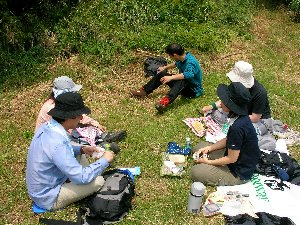

プチイベント | 2007年春 |
|---|---|
| コーヒー集会 | |
 ランタンの明かりでコーヒー集会 | 今更説明するまでもない、イベントになってきましたコーヒー集会を行いました。 小さい集会はアップさえしないのですが、今回は規模が大きかったので掲載します。 ご存知無い方に簡単に説明しますと、コーヒー集会とは夜、郊外に出掛けて屋外でコーヒーを飲むってイベントです。 気が向いたら出掛ける事が多い為、時期は不確定なのですが、星が見たいとか、蛍を見たいとか、単純に仕事のウサを晴らしたいってのもあります。 今回はシーズン初めと言うこともあり、事前通知したところ沢山の参加者に来ていただき、大イベントになってしまいました。 総勢15名位かな？ もっと多かった？ 場所はいつもの橋の下。 8時位からスタートして徐々に人が集まって来ました。 今回はサムちゃんが、ベニヤテーブルを持参してくれたので、大きなテーブルの上に、コーヒー、お菓子等が並び、幹事サクラちゃんからのケーキ差し入れも有ったりして、物凄い食べ物の量でした。 初めて来た方も、おにぎりやお菓子を差し入れて頂き、ありがとうございます。 話も弾んで、最終組が帰ったのが12時過ぎでしょうか？ ちょっとのつもりが、ついつい話し込んでしまうので時間が経つのを忘れてしまいます。 今シーズン、まだまだやりたいですね。 蛍コーヒー集会なんか楽しみです♪ 皆さんも、暇な夜に、ちょっと郊外に行ってみませんか？ 缶コーヒー１本だけ持っていって、夜闇の中、ボ〜したりすると気分変わりますよ。 数人で行って話込めば、それがコーヒー集会です。 |
| プチ・ハイク（おにぎり部） 大崩編 | |
| 登山だと大変だけど、ちょっと運動がてら山を登り、景色が良い所で、おにぎりを食べよう！ から始まった自称「おにぎり部」。 小さめのザックに、水筒・お菓子・おにぎりを詰めて、お手軽ハイクスタートです。 手始めに行った場所は、焼津の大崩ハイキングコース。 簡保の宿からスタートして、尾根を登り一度、元小浜の海岸に下りて、再度尾根を登って帰ってくるピストンコース。 所要時間片道1時間半の手軽さです。 今回は6人で登りました。 10時スタート。 ハイキングなんて中学以来と言うサクラちゃんは、開始5分で弱音を吐き始めました。（もぅ〜、ここで良いかも〜。 帰り拾って〜） これぞ「おにぎり部」にふさわしい体力です。 何だかんだと言いながらも、本日最高地点に到着。 そこはちょっと開けた場所で、焼津市街（主に東名高速道路沿い）と、駿河湾が見渡せる所でした。 ここでお弁当の予定でしたが、時間は11時前。ちょっと早いので先に海岸まで降りてみることにしました。 降りるコースが、草が生え放題の難関コース。 最近人が通って居ないのか、路肩も崩れていました。 元小浜海岸で一休みしたら、再度尾根を目指し登ります。 なぜか下りより早く登れた気がするのは、私だけでしょうか。 |  元小浜への草生え放題コース |
|  お昼のおにぎりです♪ | 先ほどの景色が良い開けた場所で、待望のお昼です。 もちろん約束通りおにぎり。 やっぱり、運動して、良い空気と良い景色の場所で食べるおにぎりは違いますね。 日差しが照りつけるものの、吹き抜ける風が心地よいです。 駿河湾越しに伊豆半島がぼんやり見えます。 この峠道の良いところ、植林がされていなくて杉などが少なく、自然に生え放題曲がり放題の、太い樹が沢山在るところです。 ツリーハウスが作れそうな程の、良い枝振りです。 手付かずの自然が、意外と身近にあるものだと感じます。 早めに降りてきた私たちは、焼津の古民家カフェにてお茶を楽しみ、第一回おにぎり部終了です。 気張らないハイキング。 こんな感じの「おにぎり部」今後も楽しみです。 |
| コメント＆写真 ｂｙ べっしー | |